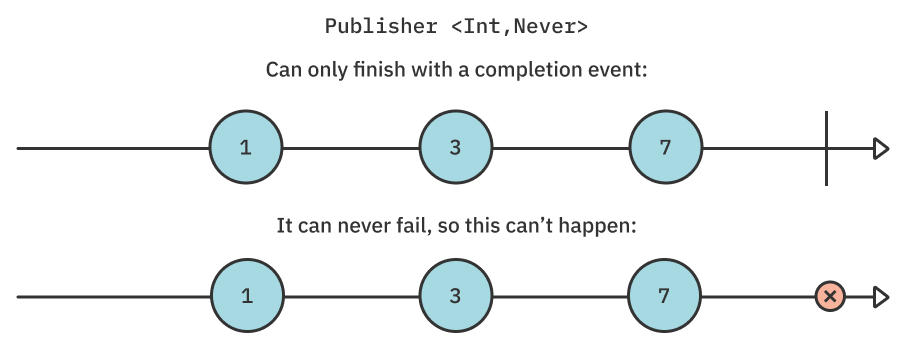
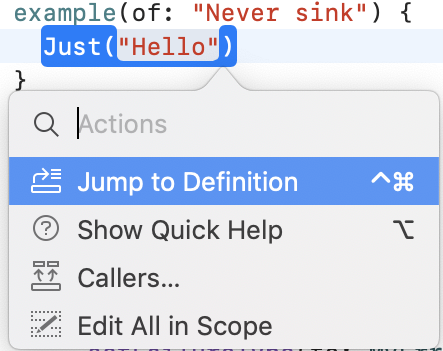
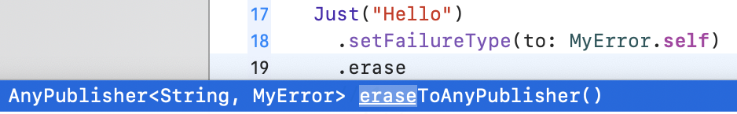
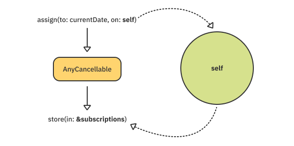
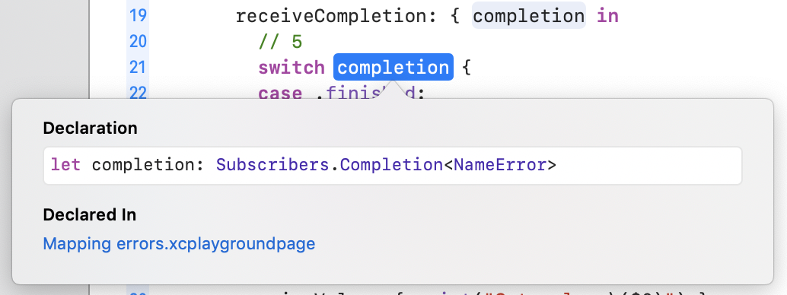
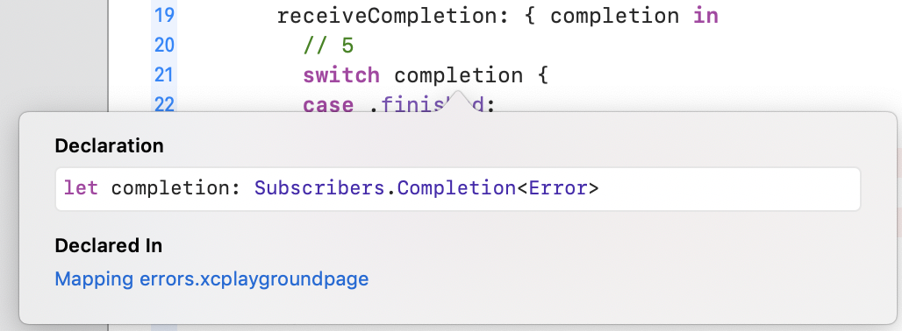
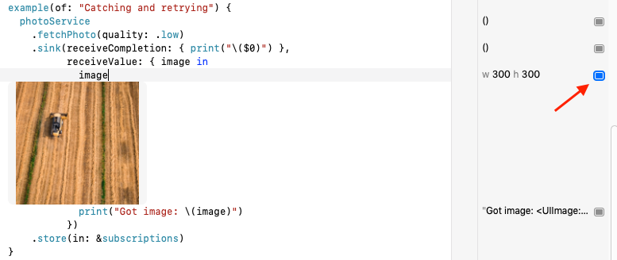
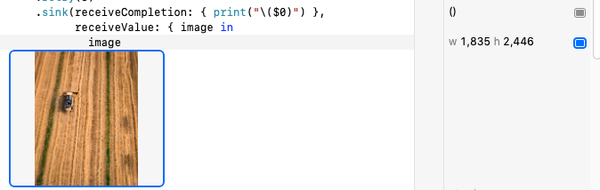
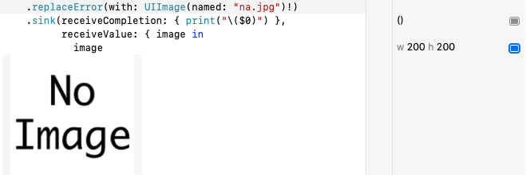

第16章：错误处理¶
您已经学到了很多关于如何编写Combine代码来随着时间的推移发射值的知识。不过，您可能已经注意到一件事：到目前为止，在您编写的大部分代码中，您根本没有处理错误，而大多处理了"快乐路径"。
除非你编写无错误的应用程序，否则这一章是为你准备的！:]
正如您在第一章"您好，Combine！"中了解到的那样，Combine发布者声明了两个通用约束：Output，它定义了发布者发出的值类型，以及Failure，它定义了该发布者可以完成哪种失败。
到目前为止，您一直专注于发布者的Output类型，但未能深入了解Failure在发布者中的作用。好吧，别担心，这一章会改变的！
入门指南¶
在projects/Starter.playground中打开本章的入门Playground。您将使用此Playground及其各种页面来尝试多种方式，Combine允许您处理和操作错误。
您现在准备深入了解Combine中的错误，但首先，花点时间考虑一下。错误是一个如此广泛的话题，你甚至会从哪里开始？
那么，从没有错误开始怎么样？
Never¶
Failure类型为Never的发布者表示发布者永远不会失败。
虽然这起初似乎有点奇怪，但它为这些发布者提供了一些极其强大的保证。具有Never失败类型的发布者允许您专注于消耗发布者的值，同时绝对确定发布者永远不会失败。它只有在完成后才能成功完成。

按Command-1在启动Playground中打开项目导航器，然后选择Never Playground页面。
添加以下示例：
example(of: "Never sink") {
Just("Hello")
}
您创建一个字符串值为Hello的Just。Just总是宣布Never Failure。要确认这一点，请按住Command键单击"Just"初始化器，然后选择"跳转到定义"：

看看定义，你可以看到Just失败的类型别名：
public typealias Failure = Never
Combine对Never的无故障保证不仅仅是理论上的，而且深深植根于框架及其各种API。
Combine提供了几个操作符，这些操作符只有在发布者保证永远不会失败时才可用。第一个是sink的变体，只处理值。
返回Never Playground页面并更新上述示例，使其看起来像这样：
example(of: "Never sink") {
Just("Hello")
.sink(receiveValue: { print($0) })
.store(in: &subscriptions)
}
运行您的Playground，您将看到Just的值打印出来：
——— Example of: Never sink ———
Hello
在上面的示例中，您使用sink(receiveValue:)这种特定的sink过载允许您忽略发布者的完成事件，而只处理其发射的值。
此过载仅适用于无懈可击的发布者。在错误处理方面，Combine是智能安全的，如果可能抛出错误，即非失败的发布者，则强制您处理完成事件。
要看到这一点，您需要将Never失败的发布者变成一个可能会失败的发布者。有几种方法可以做到这一点，您将从最受欢迎的方法开始——setFailureType操作符。
setFailureType¶
将易错的发布者变成易犯错的发布者的第一种方法是使用setFailureType。这是另一个操作符，仅适用于故障类型为Never的发布者。
将以下代码和示例添加到您的Playground页面：
enum MyError: Error {
case ohNo
}
example(of: "setFailureType") {
Just("Hello")
}
您首先在示例范围之外定义MyError错误类型。您稍后会重用此错误类型。然后，您首先创建一个与您之前使用过的相似的示例。
现在，您可以使用setFailureType将发布者的失败类型更改为MyError。在Just之后立即添加以下行：
.setFailureType(to: MyError.self)
要确认这实际上改变了发布者的失败类型，请开始键入.eraseToAnyPublisher()，自动完成将向您显示已删除的发布者类型：

在继续之前，删除您开始键入的.erase...行。
现在是时候使用sink来消耗发布者了。在上次调用setFailureType后立即添加以下代码：
// 1
.sink(
receiveCompletion: { completion in
switch completion {
// 2
case .failure(.ohNo):
print("Finished with Oh No!")
case .finished:
print("Finished successfully!")
}
},
receiveValue: { value in
print("Got value: \(value)")
}
)
.store(in: &subscriptions)
您可能已经注意到了关于上述代码的两个有趣的事实：
- 它正在使用
sink(receiveCompletion:receiveValue:)``sink(receiveValue:)重载不再可用，因为该发布者可能会完成故障事件。Combine迫使您处理此类发布者的完成事件。 - 故障类型严格键入为
MyError，这允许您锁定.failure(.ohNo)案例，而无需不必要的转换来处理该特定错误。
运行您的Playground，您将看到以下输出：
——— Example of: setFailureType ———
Got value: Hello
Finished successfully!
当然，setFailureType的效果只是一个类型系统定义。由于原始发布者是Just，因此实际上不会抛出任何错误。
在本章的后面，您将了解有关如何实际从自己的发布者那里产生错误的更多信息。但首先，还有一些操作符专门针对永不失败的发布者。
assign(to:on:)¶
您在第2章"发布者和订阅者"中了解到的assign操作符仅适用于无法失败的发布者，与setFailureType相同。如果你仔细想想，这是完全有道理的。向提供的密钥路径发送错误会导致未处理的错误或未定义的行为。
添加以下示例来测试这一点：
example(of: "assign(to:on:)") {
// 1
class Person {
let id = UUID()
var name = "Unknown"
}
// 2
let person = Person()
print("1", person.name)
Just("Shai")
.handleEvents( // 3
receiveCompletion: { _ in print("2", person.name) }
)
.assign(to: \.name, on: person) // 4
.store(in: &subscriptions)
}
在上面的代码中，您：
- 定义一个带有
id和name属性的Person类。 - 创建一个
Person实例，并立即打印其名称。 - 使用您之前了解的
handleEvents，在发布者发送完成事件后再次打印该人的姓名。 - 最后，使用
assign将该人的姓名设置为发布者发出的任何名称。
运行您的Playground并查看调试控制台：
——— Example of: assign(to:on:) ———
1 Unknown
2 Shai
不出所料，在Just发出其值后立即assign更新该人的姓名，这有效，因为Just不能失败。相比之下，您认为如果发布者有非Never失败类型会发生什么？
在Just("Shai")下方添加以下一行：
.setFailureType(to: Error.self)
在此代码中，您已将故障类型设置为标准的Swift错误。这意味着它不是Publisher<String, Never>，而是现在是一个Publisher<String, Error>。
试着运行你的Playground。Combine对手头的问题非常冗长：
referencing instance method 'assign(to:on:)' on 'Publisher' requires the types 'Error' and 'Never' be equivalent
删除您刚刚添加的setFailureType的调用，并确保您的Playground运行时没有编译错误。
assign(to:)¶
assign(to:on:)有一个棘手的部分——它将强烈捕获提供给该参数的对象。
让我们来探索一下为什么这会有问题。
在上一个示例之后立即添加以下代码：
example(of: "assign(to:)") {
class MyViewModel: ObservableObject {
// 1
@Published var currentDate = Date()
init() {
Timer.publish(every: 1, on: .main, in: .common) // 2
.autoconnect()
.prefix(3) // 3
.assign(to: \.currentDate, on: self) // 4
.store(in: &subscriptions)
}
}
// 5
let vm = MyViewModel()
vm.$currentDate
.sink(receiveValue: { print($0) })
.store(in: &subscriptions)
}
这个代码有点长，所以让我们把它分解一下。你：
- 在视图模型对象中定义
@Published属性。它的初始值是当前日期。 - 创建一个计时器发布者，每秒发出当前日期。
- 使用
prefix操作符仅接受3个日期更新。 - 应用
assign(to:on:)操作符将每个日期更新分配给您的@Published属性。 - 实例化您的视图模型，
sink已发布的发布者，并打印出每个值。
如果您运行Playground，您将看到类似于以下内容的输出：
——— Example of: assign(to:on:) strong capture ———
2021-08-21 12:43:32 +0000
2021-08-21 12:43:33 +0000
2021-08-21 12:43:34 +0000
2021-08-21 12:43:35 +0000
不出所料，上面的代码打印分配给已发布属性的初始日期，然后连续3次更新（受prefix操作符限制）。
似乎一切都很顺利，所以这里到底出了什么问题？
调用assign(to:on:)会创建一个强烈保留self的订阅。本质上——self保留订阅，订阅保留self，造成保留周期，导致内存泄漏。

幸运的是，苹果的好人意识到这有多严重，并引入了该操作符的另一个过载-assign(to:)
该操作符专门处理通过向其投影发布者提供inout引用来将已发布的值重新分配给@Published属性。
返回示例代码，找到以下两行：
.assign(to: \.currentDate, on: self) // 3
.store(in: &subscriptions)
并用以下行替换它们：
.assign(to: &$currentDate)
使用 assign(to:) 操作符并将 inout 引用传递给预计的发布者会打破保留周期，让您轻松处理上述问题。
此外，它会自动处理内部订阅的内存管理，这允许您省略store(in: &subscriptions)行。
Note
在继续之前，建议评论上一个示例，这样打印出来的计时器事件就不会为您的控制台输出添加不必要的噪音。
在这一点上，你几乎已经和无懈可击的发布者结束了。但在你开始处理错误之前，你应该知道一个与万无一失的发布者相关的最终操作符：assertNoFailure。
assertNoFailure¶
当您想在开发过程中保护自己并确认发布者无法完成失败事件时，assertNoFailure操作符非常有用。它不会阻止上游发出故障事件。然而，如果它检测到错误，它将以fatalError崩溃，这给了你在开发中修复它的好动力。
将以下示例添加到您的Playground：
example(of: "assertNoFailure") {
// 1
Just("Hello")
.setFailureType(to: MyError.self)
.assertNoFailure() // 2
.sink(receiveValue: { print("Got value: \($0) ")}) // 3
.store(in: &subscriptions)
}
在之前的代码中，您：
- 使用
Just创建一个万无一失的发布者，并将其失败类型设置为MyError。 - 如果发布者完成了失败事件，请使用
assertNoFailure与fatalError崩溃。这会将发布者的故障类型恢复到Never。 - 使用
sink打印出任何收到的值。请注意，由于assertNoFailure将故障类型设置为Never，因此sink(receiveValue:)过载再次供您使用。
运行您的Playground，并且不出预期，它应该可以正常工作：
——— Example of: assertNoFailure ———
Got value: Hello
现在，在setFailureType之后，添加以下行：
.tryMap { _ in throw MyError.ohNo }
您刚刚使用tryMap在Hello向下游推送时抛出错误。在本章的后面，您将了解有关try前缀操作符的更多信息。
再次运行你的Playground，看看控制台。您将看到类似于以下内容的输出：
Playground execution failed:
error: Execution was interrupted, reason: EXC_BAD_INSTRUCTION (code=EXC_I386_INVOP, subcode=0x0).
...
frame #0: 0x00007fff232fbbf2 Combine`Combine.Publishers.AssertNoFailure...
由于发布者发生故障，Playground崩溃了。在某种程度上，您可以将assertFailure()视为代码的保护机制。虽然不是你应该在生产中使用的东西，但在开发过程中，"早期崩溃和硬崩溃"非常有用。
在进入下一节之前，请评论tryMap的调用。
处理失败¶
哇，到目前为止，你已经学到了很多关于如何处理根本不能失败的发布者的知识......在错误处理章节中！:]虽然有点讽刺，但我希望你现在能理解彻底理解无懈可击的发布者的特征和保证是多么重要。
考虑到这一点，是时候了解Combine提供的一些技术和工具，以应对实际失败的发布者。这包括内置发布者和您自己的发布者！
但首先，你实际上是如何产生失败事件的？如上一节所述，有几种方法可以做到这一点。您刚刚使用了tryMap，那么为什么不了解更多关于这些try操作符的工作原理呢？
try操作符¶
在第二节"操作符"中，您了解了Combine的大多数操作符，以及如何使用它们来操纵发布者发出的值和事件。您还学习了如何组成由多个操作符組成的逻辑链，以生成所需的输出。
在这些章节中，您了解到大多数操作符都有以try为前缀的并行操作符，您将"在本书的后面了解它们"。好吧，现在更晚了！
Combine在可能抛出错误的操作符和可能不会抛出错误的操作符之间提供了有趣的区别。
Note
Combine中所有try前缀操作符在出现错误时的行为都是一样的。从本质上讲，您只会在本章中尝试tryMap操作符。
首先，从项目导航器中选择尝试操作符Playground页面。添加以下代码：
example(of: "tryMap") {
// 1
enum NameError: Error {
case tooShort(String)
case unknown
}
// 2
let names = ["Marin", "Shai", "Florent"].publisher
names
// 3
.map { value in
return value.count
}
.sink(
receiveCompletion: { print("Completed with \($0)") },
receiveValue: { print("Got value: \($0)") }
)
}
在上面的示例中，您：
- 定义
NameError错误枚举，您将立即使用。 - 创建一个发出三个不同字符串的发布者。
- 将每个字符串映射到其长度。
运行示例并查看控制台输出：
——— Example of: tryMap ———
Got value: 5
Got value: 4
Got value: 7
Completed with finished
正如预期的那样，所有名称都是map的，没有任何问题。 但是随后您收到了一个新的产品要求：如果您的代码接受的名称少于 5 个字符，则它应该引发错误。
将上面示例中的map替换为以下内容：
.map { value -> Int in
// 1
let length = value.count
// 2
guard length >= 5 else {
throw NameError.tooShort(value)
}
// 3
return value.count
}
在上面的map中，您检查字符串的长度是否大于或等于5。否则，您将尝试抛出适当的错误。
但是，一旦您添加上述代码或尝试运行它，您就会看到编译器产生错误：
Invalid conversion from throwing function of type '(_) throws -> _' to non-throwing function type '(String) -> _'
由于map是一个非抛出操作符，因此您不能从其中抛出错误。幸运的是，try操作符只是为了这个目的而制作的。
将map替换为tryMap，然后再次运行您的Playground。它现在将编译并生成以下输出（截断）：
——— Example of: tryMap ———
Got value: 5
Got value: 5
Completed with failure(...NameError.tooShort("Shai"))
映射错误¶
map和tryMap之间的差异超出了后者允许抛出错误的事实。虽然map承载了现有的失败类型，并且只操作发布者的值，但tryMap没有——它实际上将错误类型擦除为普通的Swift Error。try前缀的操作符相比，所有操作符都是如此。
切换到映射错误Playground页面，并向其添加以下代码：
example(of: "map vs tryMap") {
// 1
enum NameError: Error {
case tooShort(String)
case unknown
}
// 2
Just("Hello")
.setFailureType(to: NameError.self) // 3
.map { $0 + " World!" } // 4
.sink(
receiveCompletion: { completion in
// 5
switch completion {
case .finished:
print("Done!")
case .failure(.tooShort(let name)):
print("\(name) is too short!")
case .failure(.unknown):
print("An unknown name error occurred")
}
},
receiveValue: { print("Got value \($0)") }
)
.store(in: &subscriptions)
}
在上面的示例中，您：
- 定义一个用于此示例的
NameError。 - 创建一个只发出字符串
Hello的Just。 - 使用
setFailureType将故障类型设置为NameError。 - 使用
map另一个字符串附加到已发布的字符串中。 - 最后，使用
sink的receiveCompletion NameError的每个故障案例打印出适当的消息。
运行Playground，您将看到以下输出：
——— Example of: map vs tryMap ———
Got value Hello World!
Done!
接下来，找到switch completion {行，并在completion时按住Option键单击：

请注意，Completion的故障类型是NameError，这正是您想要的。setFailureType操作符允许您专门针对NameError故障，如failure(.tooShort(let name))
接下来，将map更改为tryMap。您会立即注意到Playground不再编译。再次按住Option键点按completion：

很有意思！tryMap删除了您的严格类型错误并将其替换为通用Swift.Error类型。 即使您实际上并没有从tryMap中抛出错误，也会发生这种情况——您只是使用了它！ 这是为什么？
当你想到它时，推理很简单：Swift还不支持键入的投掷，尽管自2015年以来，Swift Evolution一直在围绕这个主题进行讨论。这意味着当您使用try-前缀操作符时，您的错误类型将始终被抹去最常见的祖先：Swift.Error。
那么，你能做些什么呢？对于发布者来说，严格类型Failure的全部意义在于让您在本例中专门处理NameError，而不是任何其他类型的错误。
一个天真的方法是手动将通用错误转换为特定的错误类型，但这相当不理想。它打破了严格键入错误的全部目的。幸运的是，Combin为这个问题提供了一个很好的解决方案，称为mapError。
在调用tryMap后，立即添加以下行：
.mapError { $0 as? NameError ?? .unknown }
mapError 接收上游发布者抛出的任何错误，并允许您将其映射到您想要的任何错误。 在这种情况下，您可以利用它将错误转换回 NameError 或回退到 NameError.unknown 错误。 在这种情况下，您必须提供一个回退错误，因为从理论上讲，强制转换可能会失败——即使它不会在这里——并且您必须从该操作符返回一个 NameError。
这会将 Failure 恢复为其原始类型，并将您的发布者转回 Publisher<String, NameError>。
构建并运行Playground。 它最终应该可以按预期编译和工作：
——— Example of: map vs tryMap ———
Got value Hello World!
Done!
最后，将整个tryMap调用替换为：
.tryMap { throw NameError.tooShort($0) }
此调用将立即从tryMap中抛出错误。再次查看控制台输出，并确保您获得正确键入的NameError：
——— Example of: map vs tryMap ———
Hello is too short!
设计您的易犯错API¶
在构建自己的基于组合的代码和API时，您通常会使用来自其他来源的API，这些API会返回各种类型失败的发布者。在创建自己的API时，您通常也希望围绕该API提供自己的错误。尝试这个比仅仅理论更容易，所以你会继续以一个例子为例！
在本节中，您将构建一个快速API，允许您从icanhazdadjoke API获取有点有趣的爸爸笑话，请访问https://icanhazdadjoke.com/api。
首先切换到"设计您的易犯的API"Playground页面，并向其中添加以下代码，这构成了下一个示例的第一部分：
example(of: "Joke API") {
class DadJokes {
// 1
struct Joke: Codable {
let id: String
let joke: String
}
// 2
func getJoke(id: String) -> AnyPublisher<Joke, Error> {
let url = URL(string: "https://icanhazdadjoke.com/j/\(id)")!
var request = URLRequest(url: url)
request.allHTTPHeaderFields = ["Accept": "application/json"]
// 3
return URLSession.shared
.dataTaskPublisher(for: request)
.map(\.data)
.decode(type: Joke.self, decoder: JSONDecoder())
.eraseToAnyPublisher()
}
}
}
在上述代码中，您通过以下方式创建了新DadJokes类的shell：
- 定义
Joke结构。API响应将被解码为Joke实例。 - 提供
getJoke(id:)方法，该方法目前返回一个发布者，该发布者发出Joke，使用标准Swift.Error可能会失败。 - 使用
URLSession.dataTaskPublisher(for:)调用icanhazdadjoke API，并使用JSONDecoder``decode操作符将生成的数据解码为Joke。您可能还记得第9章"网络"中的这项技术。
最后，您需要实际使用您的新API。在DadJokes类的正下方添加以下内容，同时仍在示例范围内：
// 4
let api = DadJokes()
let jokeID = "9prWnjyImyd"
let badJokeID = "123456"
// 5
api
.getJoke(id: jokeID)
.sink(receiveCompletion: { print($0) },
receiveValue: { print("Got joke: \($0)") })
.store(in: &subscriptions)
在此代码中，您：
- 创建一个
DadJokes的实例并定义两个具有有效和无效笑话ID的常量。 - 使用有效的笑话
ID调用DadJokes.getJoke(id:)并打印任何完成事件或解码的笑话本身。
运行你的Playground并查看控制台：
——— Example of: Joke API ———
Got joke: Joke(id: "9prWnjyImyd", joke: "Why do bears have hairy coats? Fur protection.")
finished
这本书的封面上有一只北极熊，里面有一个熊的笑话？啊，经典。
因此，您的API目前完美地处理了快乐路径，但这是一个错误处理章节。在包装其他发布者时，您需要问问自己："这个特定的发布者可能会产生什么样的错误？"
在这种情况下：
- 由于各种原因，例如连接错误或无效的请求，调用
dataTaskPublisher可能会因URLError而失败。 - 提供的笑话
ID可能不存在。 - 如果
API响应更改或其结构不正确，则解码JSON响应可能会失败。 - 任何其他未知错误！错误是大量随机的，因此不可能想到每个边缘情况。出于这个原因，您始终希望有一个案例来涵盖未知或未处理的错误。
考虑到此列表，请在DadJokes类中，紧挨着Joke结构的正下方添加以下代码：
enum Error: Swift.Error, CustomStringConvertible {
// 1
case network
case jokeDoesntExist(id: String)
case parsing
case unknown
// 2
var description: String {
switch self {
case .network:
return "Request to API Server failed"
case .parsing:
return "Failed parsing response from server"
case .jokeDoesntExist(let id):
return "Joke with ID \(id) doesn't exist"
case .unknown:
return "An unknown error occurred"
}
}
}
此错误定义：
- 概述了
DadJokes API中可能出现的所有错误。 - 符合
CustomStringConvertible，它允许您为每个错误案例提供友好的description。
添加上述Error类型后，您的Playground将不再编译。 这是因为getJoke(id:)返回一个AnyPublisher<Joke, Error>。 之前，Error指的是Swift.Error，但现在它指的是 DadJokes.Error——在这种情况下，这实际上是你想要的。
那么，您如何将各种可能和不同类型的错误都映射到您的DadJoke.Error？如果你一直在关注这一章，你可能已经猜到了答案：mapError是你的朋友。
decode和eraseToAnyPublisher()的调用之间将以下内容添加到getJoke(id:)）：
.mapError { error -> DadJokes.Error in
switch error {
case is URLError:
return .network
case is DecodingError:
return .parsing
default:
return .unknown
}
}
就这样！这个简单的mapError使用switch语句将发布者可能抛出的任何类型的错误替换为DadJokes.Error。你可能会问自己："我为什么要包装这些错误？"答案是双重的：
- 您的发布者现在保证只在
DadJokes.Error上失败，这在消耗API和处理其可能的错误时非常有用。你确切地知道你会从类型系统中得到什么。 - 您不会泄露
API的实现细节。想想看，您的API订阅者是否关心您是否使用URLSession执行网络请求，并使用JSONDecoder解码响应？显然不是！订阅者只关心您的API本身定义的错误，而不是其内部依赖项。
还有一个你还没有处理的错误：一个不存在的笑话ID。尝试更换以下行：
.getJoke(id: jokeID)
为:
.getJoke(id: badJokeID)
再次运行Playground。这一次，您将收到以下错误：
failure(Failed parsing response from server)
有趣的是，当您发送不存在的ID时，icanhazdadjoke的API在404（未找到）的HTTP代码下不会失败——正如大多数API所期望的那样。相反，它会发回另一个但有效的JSON回复：
{
message = "Joke with id \"123456\" not found";
status = 404;
}
处理这个案子需要一些黑客攻击，但这绝对不是你无法处理的！
回到getJoke(id:)将map(\.data)的调用替换为以下代码：
.tryMap { data, _ -> Data in
// 6
guard let obj = try? JSONSerialization.jsonObject(with: data),
let dict = obj as? [String: Any],
dict["status"] as? Int == 404 else {
return data
}
// 7
throw DadJokes.Error.jokeDoesntExist(id: id)
}
在上述代码中，在将原始数据传递给decode操作符之前，您可以使用tryMap执行额外的验证：
- 您使用
JSONSerialization尝试检查是否存在status字段，其值是否为404——即笑话不存在。如果不是这样，您只需返回数据，即可将其向下游推送到decode操作符。 - 如果您确实找到了
404状态代码，则会抛出一个.jokeDoesntExist(id:)错误。
再次运行您的Playground，您会注意到另一个需要解决的小挑剔：
——— Example of: Joke API ———
failure(An unknown error occurred)
失败实际上被视为未知错误，而不是DadJokes.Error，因为您在mapError中没有处理该类型。
在mapError中，找到以下一行：
return .unknown
并替换为：
return error as? DadJokes.Error ?? .unknown
如果其他错误类型都不匹配，则在放弃并返回未知错误之前，请尝试将其转换为DadJokes.Error。
再次运行您的Playground，看看控制台：
——— Example of: Joke API ———
failure(Joke with ID 123456 doesn't exist)
这一次，您会收到正确的错误，正确的类型！太棒了。 :]
在总结这个示例之前，您可以在getJoke(id:)中进行最后的优化。
正如您可能已经注意到的，笑话ID由字母和数字组成。就我们的"坏身份证"而言，您只发送了号码。您可以先发制人地验证您的ID，而不会浪费资源，而不是执行网络请求。
在getJoke(id:)）开头添加以下最后一段代码：
guard id.rangeOfCharacter(from: .letters) != nil else {
return Fail<Joke, Error>(
error: .jokeDoesntExist(id: id)
)
.eraseToAnyPublisher()
}
在此代码中，您首先要确保id至少包含一个字母。如果不是这样，您会立即返回Fail。
Fail是一种特殊的发布者，允许您立即以提供的错误而强制失败。它非常适合这些根据某些情况想及早失败的情况。最后，您可以使用eraseToAnyPublisher获得预期的AnyPublisher<Joke, DadJokes.Error>类型。
就这样！使用无效ID再次运行您的示例，您将收到相同的错误消息。但是，它将立即发布，并且不会执行网络请求。巨大的成功！
在继续之前，请恢复您的电话，getJoke(id:)使用jokeID而不是badJokeId。
此时，您可以通过手动"破坏"代码来验证错误逻辑。执行以下每个操作后，撤销更改，以便您可以尝试下一个操作：
- 当您创建上面的
URL时，请在其中添加一个随机字母来破坏URL。运行Playground，您将看到：failure(Request to API Server failed) - 评论以
request.allHttpHeaderFields开头的行，并运行Playground。由于服务器响应将不再是JSON，而只是纯文本，您将看到输出：failure(Failed parsing response from server) - 像以前一样，向
getJoke(id:)发送一个随机ID。运行Playground，您将获得：failure(Joke with ID {your ID} doesn't exist)
就这样！您刚刚构建了自己的基于组合的生产级API层，并具有自己的错误。一个人还想要什么？ :]
捕捉和重试¶
您学到了很多关于组合代码的错误处理知识，但我们用两个最终主题保存了最好的：捕捉错误和重试失败的发布者。
Publisher作为代表工作的统一方式的伟大之处在于，您有很多操作符，让您在很少的代码行的情况下完成令人难以置信的工作量。
继续，直接进入这个例子。
首先切换到项目导航器中的捕获和重试页面。展开Playground的Sources文件夹，然后打开PhotoService.swift。
它包括一个带有fetchPhoto(quality:failingTimes:)方法的PhotoService，您将在本节中使用该方法。PhotoService使用自定义发布者获取高质量或低质量的照片。在这个例子中，要求高质量的图像总是失败的——因此您可以尝试各种技术来重试并捕捉发生故障。
返回捕捉和重试Playground页面，将此裸露的示例添加到您的Playground：
let photoService = PhotoService()
example(of: "Catching and retrying") {
photoService
.fetchPhoto(quality: .low)
.sink(
receiveCompletion: { print("\($0)") },
receiveValue: { image in
image
print("Got image: \(image)")
}
)
.store(in: &subscriptions)
}
上述代码现在应该已经很熟悉了。您以.low质量实例化PhotoService和callfetchPhoto。然后，您可以使用sink打印出任何完成事件或获取的图像。
请注意，photoService的实例化不在示例的范围之内，因此它不会立即被释放。
运行你的Playground，等待它完成。您应该会看到以下输出：
——— Example of: Catching and retrying ———
Got image: <UIImage:0x600000790750 named(lq.jpg) {300, 300}>
finished
点击receiveValue第一行旁边的显示结果按钮，您将看到一张美丽的低质量图片......嗯，一个组合。

接下来，将质量从.low更改为.high，然后再次运行Playground。您将看到以下输出：
——— Example of: Catching and retrying ———
failure(Failed fetching image with high quality)
如前所述，要求高质量的图像将失败。这是你的起点！这里有几件事你可以改进。你将从重试失败开始。
很多时候，当您请求资源或执行一些计算时，故障可能是因网络连接不良或其他不可用资源而导致的一次性发生。
在这些情况下，您通常会编写一个大型机制来重试不同的工作，同时跟踪尝试次数并决定如果所有尝试都失败了该怎么办。 幸运的是，Combine让这一切变得非常简单。
就像Combine中的所有好东西一样，有一个操作符！
retry操作符接受一个数字。如果发布者失败，它将重新订阅上游，并重试到您指定的次数。如果所有重试失败，它只会像没有retry操作符的情况下一样将错误推下游。
是时候让你试试这个了。在线下方fetchPhoto(quality: .high)添加以下行：
.retry(3)
等等，是这样吗？！是的。就这样。
对于包装在发布者中的每件作品，您都可以获得免费的重试机制，这就像调用这个简单的重试操作符一样简单。
在运行Playground之前，请在fetchPhoto和retry的调用之间添加此代码：
.handleEvents(
receiveSubscription: { _ in print("Trying ...") },
receiveCompletion: {
guard case .failure(let error) = $0 else { return }
print("Got error: \(error)")
}
)
此代码将帮助您查看重试的时间——它会打印出fetchPhoto中发生的订阅和故障。
现在你准备好了！运行你的Playground，等待它完成。您将看到以下输出：
——— Example of: Catching and retrying ———
Trying ...
Got error: Failed fetching image with high quality
Trying ...
Got error: Failed fetching image with high quality
Trying ...
Got error: Failed fetching image with high quality
Trying ...
Got error: Failed fetching image with high quality
failure(Failed fetching image with high quality)
如您所见，有四次尝试。最初的尝试，加上由操作符触发的三次重试。由于获取高质量照片不断失败，操作符耗尽了所有重试尝试，并将错误推到下沉。
将以下调用fetchPhoto替换：
.fetchPhoto(quality: .high)
为:
.fetchPhoto(quality: .high, failingTimes: 2)
faliingTimes参数将限制获取高质量图像失败的次数。在这种情况下，它会在你前两次调用它时失败，然后成功。
再次运行您的Playground，并查看输出：
——— Example of: Catching and retrying ———
Trying ...
Got error: Failed fetching image with high quality
Trying ...
Got error: Failed fetching image with high quality
Trying ...
Got image: <UIImage:0x600001268360 named(hq.jpg) {1835, 2446}>
finished
如您所见，这次有三次尝试，最初的一次加上两次重试。该方法在前两次尝试中失败，然后成功返回了这张华丽、高质量的现场组合照片：

太棒了！但在这个服务调用中，你还有最后一个功能要改进。您的产品人员要求，如果获取高质量图像失败，请退回到低质量图像。如果获取低质量图像也失败，您应该退回到硬编码的图像。
你将从两项任务中的后一项开始。Combine包括一个名为replaceError(with:)的方便操作符，该操作符允许您在发生错误时返回到发布者类型的默认值。这也将发布者的Failure类型更改为Never"，因为您将所有可能的失败替换为回退值。
首先，从fetchPhoto中删除failingTimes参数，因此它像以前一样不断失败。
然后，在调用后立即添加以下行以重试：
.replaceError(with: UIImage(named: "na.jpg")!)
再次运行您的Playground，看看这次的图像结果。经过四次尝试（即初始加三次重试）后，您将回到磁盘上的硬编码映像：

此外，查看控制台输出会显示您所期望的：有四次尝试失败，其次是硬编码的回退图像：
——— Example of: Catching and retrying ———
Trying ...
Got error: Failed fetching image with high quality
Trying ...
Got error: Failed fetching image with high quality
Trying ...
Got error: Failed fetching image with high quality
Trying ...
Got error: Failed fetching image with high quality
Got image: <UIImage:0x6000020e9200 named(na.jpg) {200, 200}>
finished
现在，对于本章的第二个任务和最后一部分：如果高质量图像失败，请退回到低质量图像。Combine为这项任务提供了完美的操作符，称为catch。它允许您从发布者那里发现失败，并与不同的发布者一起从中恢复。
要查看此操作，请在retry后但在replaceError(with:)之前添加以下代码：
.catch { error -> PhotoService.Publisher in
print("Failed fetching high quality, falling back to low quality")
return photoService.fetchPhoto(quality: .low)
}
最后一次运行您的Playground，看看控制台：
——— Example of: Catching and retrying ———
Trying ...
Got error: Failed fetching image with high quality
Trying ...
Got error: Failed fetching image with high quality
Trying ...
Got error: Failed fetching image with high quality
Trying ...
Got error: Failed fetching image with high quality
Failed fetching high quality, falling back to low quality
Got image: <UIImage:0x60000205c480 named(lq.jpg) {300, 300}>
finished
和以前一样，最初的尝试加上三次重试以获取高质量图像失败了。一旦操作符用尽了所有重试，catch就会发挥作用，并订阅photoService.fetchPhoto，请求低质量图像。这导致从失败的高质量请求回退到成功的低质量请求。
关键点¶
Failure类型为Never的发布者保证不会发出故障完成事件。- 许多操作符只与可靠的发布者合作。 例如：
sink(receiveValue:)、setFailureType、assertNoFailure和assign(to:on:)。 try前缀操作符允许您从其中抛出错误，而非try操作符则不抛出错误。- 由于
Swift不支持键入抛出，调用try-前缀操作符会抹去发布者的Failure到简单的SwiftError。 - 使用
mapError映射发布者的Failure类型，并将发布者中的所有失败类型统一为单一类型。 - 当根据具有自己
Failure类型的其他发布者创建自己的API时，请将所有可能的错误包装到您自己的Error类型中，以统一它们并隐藏API的实现详细信息。 - 您可以使用
retry操作符额外多次重新订阅失败的发布者。 replaceError(with:)当您想在失败时为发布者提供默认回退值时非常有用。- 最后，您可以使用
catch将失败的发布者替换为其他备用发布者。
接下来去哪？¶
恭喜你进入本章的结尾。您基本上掌握了关于Combine中错误处理的所有知识。
您只在本章的try操作符部分中试验了tryMap操作符。 您可以在https://apple.co/3233VRB的Apple官方文档中找到带有try前缀的操作符的完整列表。
随着您对错误处理的掌握，是时候了解Combine：调度程序中较低层次但最重要的主题之一了。继续下一章，了解什么是调度器以及如何使用它们。